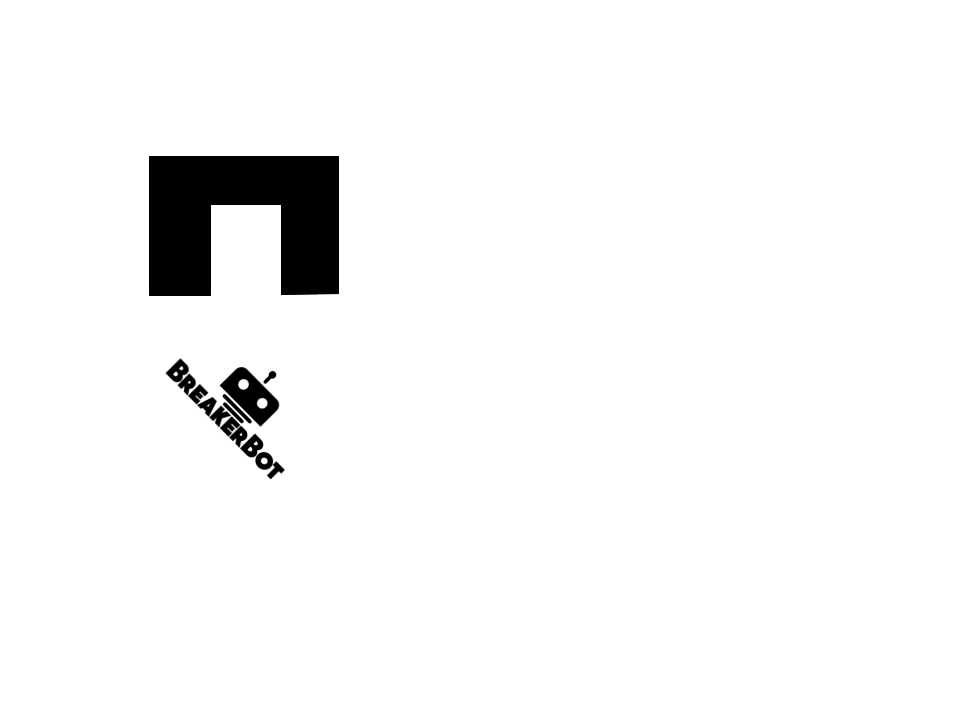
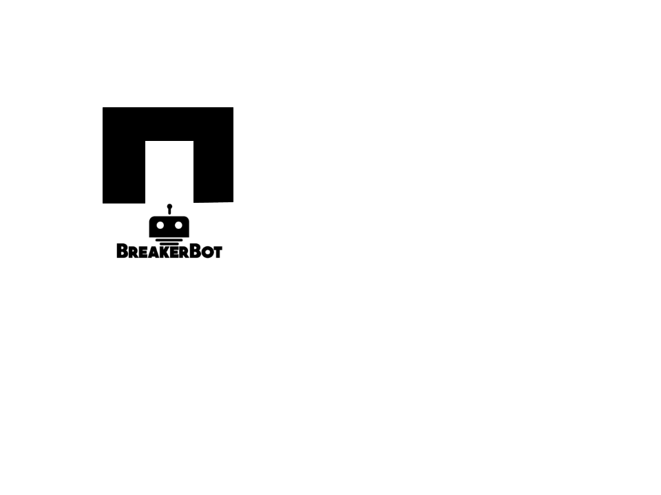

Postion Stuff
This section will include the gyro, compass, and other postion stuff...
Breaker Engagaged
Robot Asleep


Here will be the instructions to manually align the robot
Hello this is auto alignment mode
Rotational Alignment
Distance Alignment
Fine Alignment


Please connect or reconnect the controller.
▲
◀
▶
▼
This will be the output of the robot
e.g. We'll have a stream of data, like, Robot Connected at 14:23, Robot Aligned at 14:59, etc.